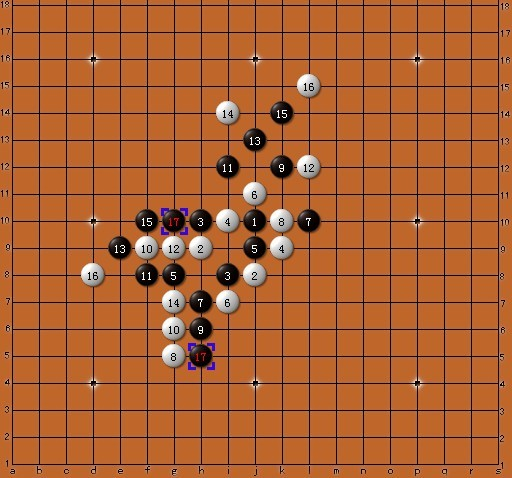

看看白先应该怎么走，双线五子棋题目
首页
裁判&规则
#1 看看白先应该怎么走，双线五子棋题目 作者：蓝天蓝 发表时间：2011-5-25 23:23:06
“双线五子棋”详细介绍：ShowPost.asp?ThreadID=11244
“双线五子棋”对弈网站：http://www.renrousousuo.com/DoubleLine.aspx
白先应该怎么走？
［此帖子已被 蓝天蓝 在 2011-5-25 23:25:33 编辑过］
#2 Re:看看白先应该怎么走，双线五子棋题目 作者：黄药师 发表时间：2011-5-25 23:28:05
这个难道是2v2？？？
#3 Re:看看白先应该怎么走，双线五子棋题目 作者：蓝天蓝 发表时间：2011-5-25 23:34:12
双线五子棋双线五子棋的规则：
（1）、连五嬴，或者抓禁赢
（2）、空枰开局，黑先下一颗子，然后双方轮流下子，每次两颗。
即：黑1白2白2黑3黑3白4白4黑5黑5……（双步）
（3）、同一手棋内的两颗棋子，不能在同一直线上。
（4）此外，“双线”五子棋也有禁手，如果同一回合内的两颗同色棋子落在了同一条直线上，则违禁判规则：
#4 Re:Re:看看白先应该怎么走，双线五子棋题目 作者：日出333 发表时间：2011-5-27 12:55:58
引用：
原文由 黄药师 发表于 2011-5-25 23:28:05 :
这个难道是2v2？？？
其实可以作为2V2来下的。。
#5 Re:看看白先应该怎么走，双线五子棋题目 作者：日出333 发表时间：2011-5-27 12:57:21
蓝天你这题是要干什么呢，没说清楚。。是白先如何防守，还是白先如何杀？
#6 Re:Re:看看白先应该怎么走，双线五子棋题目 作者：蓝天蓝 发表时间：2011-6-14 10:17:42
引用：
原文由 日出333 发表于 2011-5-27 12:57:21 :
蓝天你这题是要干什么呢，没说清楚。。是白先如何防守，还是白先如何杀？
白先如何防守
#7 Re:Re:Re:看看白先应该怎么走，双线五子棋题目 作者：日出333 发表时间：2011-6-14 23:16:09
引用：
原文由 蓝天蓝 发表于 2011-6-14 10:17:42 :
引用：
原文由 日出333 发表于 2011-5-27 12:57:21 :
蓝天你这题是要干什么呢，没说清楚。。是白先如何防守，还是白先如何杀？
白先如何防守
那不是很容易么。。
h11 g4
#8 Re:看看白先应该怎么走，双线五子棋题目 作者：小元 发表时间：2011-6-30 15:53:42
是不是六子玩多了，无聊了？